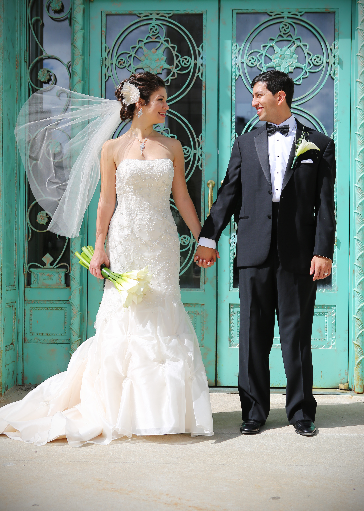

After working on my thesis for roughly two and a half years, I finally, officially completed it on July 31, 2015. Once finished, I was granted a Master in Arts in East Asian Studies. I threw a "thesis is over" party at Carnivale and Hubbard Inn.
We ate at CarnivaleAlex, Renee, and IMy completed thesis
>> Portland, Seattle, Vancouver Trip
Inspired by the television series Portlandia, my husband and I took a trip to Portland, Seattle and Vancouver in July. The scenery was beautiful!
Look!Look!Look!
>> One Year Anniversary
On August 30, my husband and I celebrated our one year anniversary of being married. We participated in a sprint triathlon and stayed at the Palmer House Hilton, the hotel our reception was held at, that day. Click here for guest taken images from our wedding.
Look!Look!Look!
>> Here is an example of absolute positioning
Yay I am here and I am in an absolute position on this page in relation to my parent, article4!
This paragraph is not absolutely positioned, however.